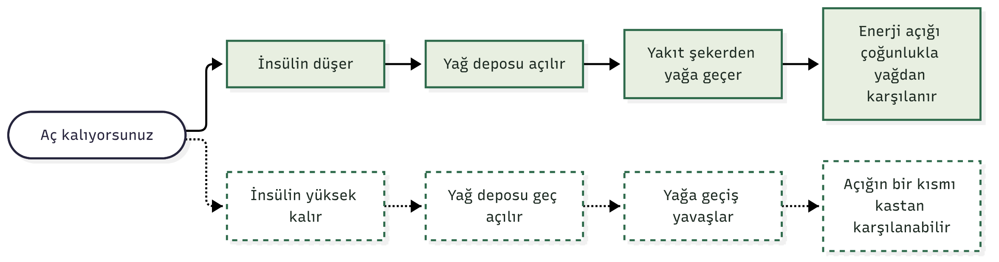

İki kişi aynı aralıklı açlık düzenini aynı süre uyguluyor. Birinin bel çevresi daralıyor. Diğerinin tartısı düşüyor ama bel çevresi yerinde duruyor. Aynı açlık, farklı sonuç. Neden?
Olası cevaplardan biri, kanınızdaki insülin düzeyi. Yeni çalışmalar, hücrelerin insüline yanıtının bozulduğu (insülin direnci) ve insülinin kronik olarak yüksek seyrettiği durumlarda, vücudun açlığa verdiği yanıtın değişebileceğini düşündürüyor. Bu yazıda bu "olabilir"in ne kadarının kanıta dayandığını ayıklıyoruz. Baştan söyleyeyim: en net mekanizma bulguları fare deneylerinden geliyor, insan verisi ise daha dağınık.
Kısaca:
- Ne bulundu: Fare deneylerinde kronik yüksek insülin, aralıklı açlık sırasında yağ kaybını azalttı ve kas kaybını artırdı. İnsanlarda da açlığa verilen yanıtın metabolik duruma göre farklılaştığına dair gözlemler var. Ama bunu aralıklı açlığın sonuçlarına doğrudan bağlayan bir insan denemesi bulamadım.
- Ne kadar güvenilir: Mekanizma fare düzeyinde. İnsan kanıtı dolaylı ve karışık.
- Senin için ne demek: Aralıklı açlığı bırakman gerekmiyor. Ama tartıya değil, vücut kompozisyonuna bakmak ve kası korumak, özellikle insülin direncin olabilirse, daha önemli hale geliyor.
Önce normal tablo: Aç kalınca vücut ne yapıyor?
Yemek yediğinizde pankreas insülin salgılar. İnsülin, kandaki şekerin hücrelere girmesini sağlarken yağ hücrelerine de bir mesaj verir: "Depoyu kapalı tut."
Aç kaldıkça insülin düşer ve mesaj değişir. Yağ hücreleri depodaki yağı kana salar. Kas ve karaciğer de yakıt olarak giderek daha çok yağ kullanır. Vücudun şekerden yağa, gerektiğinde yeniden şekere kolayca geçebilmesine metabolik esneklik diyoruz.
Aralıklı açlığın "yağ yakma" mantığı bu geçişe dayanıyor. Kritik nokta şu: geçiş, insülinin düşmesine bağlı. İnsülin yeterince düşmüyorsa ya da hücreler bu düşüşe ayak uyduramıyorsa, mantık aksayabilir.

İnsülin yüksekken ne değişiyor olabilir? Üç olası etki
İnsülin direncinde hücreler insüline zayıf yanıt verir. Pankreas bunu daha fazla insülin salgılayarak telafi eder ve kanda kronik olarak yüksek insülin kalır (hiperinsülinemi). Bunun açlık yanıtını üç noktada değiştirdiğine dair ipuçları var. Her biri ayrı çalışmalardan geliyor; hepsini birleştiren, baştan sona kanıtlanmış tek bir zincir yok.
1. Yağ deposunun kapısı geç açılıyor olabilir. İnsülin direnci olan obez kişilerin yağ dokusunda, yağı yıkan enzimlerin gen ifadesinin daha düşük olduğu bulunmuş (Berndt ve ark., 2008). Yani depoyu açacak "makineler" daha az çalışıyor olabilir. Bu ölçüm yalnızca gen düzeyinde ve tek bir zaman noktasında; nedensellik göstermiyor.
2. Yakıt geçişi yavaşlıyor olabilir. Wijngaarden ve ark. (2013), 12 zayıf ve 14 obezitesi olan ancak diyabeti olmayan kişiyi 48 saat aç bıraktı. Kilo kaybı iki grupta benzerdi. Ama obezitesi olan grupta insülindeki düşüş daha küçüktü ve şekerden yağ yakımına geçiş belirgin biçimde köreldi. Obezitesi olan kişilerin kasında insülin reseptörü ve mitokondri (enerji santrali) proteinleri de daha düşüktü. Aynı 48 saat, aynı kilo kaybı, ama vücudun yağa geçişi çok farklı. Fare tarafında Conn ve ark. (2024) da aralıklı açlığın yağ yakımını zayıf farelerde artırdığını, obez ve tip 2 diyabetli farelerde artırmadığını gösterdi. Bu karşılaştırma obez ile zayıf arasında; insülin düzeyine göre bir ayrıştırma değil.
3. Giden şey yağ değil, kas olabilir. Marko ve ark. (2026), obez erkek farelerde 10 hafta boyunca haftada iki gün aç bırakma (5:2) uyguladı. Kanında insülin kronik yüksek olan farelerde sonuç şuydu: daha fazla yağ dokusu, daha büyük yağ hücreleri, daha az kas. Bu farelerin yağ dokusunda IRF4 adlı protein azalmıştı. IRF4'ü genetik olarak silinen obez farelerde de aynı tablo ortaya çıktı: yağ kalıyor, kas gidiyor. Aynı çalışma insana da bir göz kırpıyor: obezitesi olan kişilerde kan insülini yüksek olanlar, 48 saatlik açlıktan sonra daha fazla yağsız kütle kaybetti. Bu, küçük bir ilk ipucu; bağımsız bir doğrulama henüz yok.
Üçünü yan yana koyunca akla yatkın bir hikâye çıkıyor: insülin yüksek kalırsa yağ deposu geç açılır, vücut yağ yakmaya geçmekte zorlanır ve enerji açığının bir kısmı kastan karşılanır. Ama bu bir hipotez. Üç halka farklı çalışmalardan, farklı türlerden ve farklı yöntemlerden geliyor.
Peki insanlarda gerçekten böyle mi?
Burada cevap henüz "bilmiyoruz"a yakın. Önce ortalamaya bakalım.
- Siles-Guerrero ve ark. (2024), obezitesi olan yetişkinlerde 10 randomize denemeyi (623 kişi) birleştirdi. Aralıklı açlık ve sürekli kalori kısıtlaması yağsız kütle üzerinde benzer etki gösterdi.
- Pavlou ve ark. (2023), tip 2 diyabetli 75 yetişkinde 6 ay boyunca 8 saatlik yeme penceresini günlük %25 kalori kısıtlamasıyla karşılaştırdı. İkincil analizde iki grupta da yağsız kütle kontrole göre değişmedi (Pavlou ve ark., 2025).
- Xing ve ark. (2026), 28 denemede (1833 kişi) aralıklı açlığın yağsız kütle kaybıyla ilişkili olduğunu bildirdi. Ama kanıt güvenilirliği düşük ile çok düşük arasındaydı.
Ortalamada tablo ılımlı. "Aralıklı açlık kasları eritir" demek için yeterli kanıt yok. Kalori kısıtlaması da yağsız kütle kaybettirebiliyor.
Ama ortalama, alt grupları saklayabilir. Bir sınıfın not ortalaması 70 olabilir; bu, herkesin 70 aldığı anlamına gelmez. Yukarıdaki denemeler katılımcıları insülin düzeyine göre ayırıp ayrı analiz yapmıyor. Dolayısıyla insülini yüksek bir alt grubun farklı yanıt verip vermediğini bilmiyoruz. Aralıklı açlık için bu soruyu doğrudan test eden bir çalışma bulunmuyor.
Bu boşluk tesadüf değil, bizi de ilgilendiriyor. Başlangıç insülin direncinin aralıklı açlıkla kilo kaybını nasıl etkilediğini inceleyen bir sistematik derleme ve meta-analiz üzerinde çalışıyoruz; süreç devam ediyor. Sonuçlar çıkınca burada paylaşacağım. Cevap beni şimdiden heyecanlandırıyor, çünkü bu yazıdaki "olabilir"lerin hangisinin insanda karşılığı olduğunu görmemizi sağlayabilir.
Kalori kısıtlaması çalışmalarından gelen ipuçları da tek yönlü değil:
- Andersson ve ark. (2025), 10 haftalık düşük kalorili diyet uygulanan 93 yetişkinde, karın yağ hücrelerinin insüline duyarlılığı en yüksek olanların yaklaşık %30 daha fazla kilo verdiğini buldu. Ama genel insülin direnci göstergesi (HOMA-IR) kilo kaybıyla ilişkili değildi.
- Reik ve ark. (2024), 158 obezitesi olan yetişkinde 8 haftalık düşük kalorili diyetten önce yapılan glukoz yükleme testinin (glukoz ve insülin yanıtı) vücut ölçülerindeki değişimi, yağsız kütle dahil, öngörmediğini bildirdi.
Yani "insülin yüksek, sonuç kötü" gibi tek satırlık bir kural yok. Hangi insülin ölçüsüne baktığınız da önemli görünüyor.
İşin öbür yüzü: Aç kalmak insülin direncini düzeltebilir mi?
İlişki tek yönlü olmayabilir. İnsülin düzeyi açlığa yanıtı şekillendiriyor olabilir; ama aralıklı açlık ve kalori azaltımı da insülin direncini düzeltiyor olabilir.
İnsanlarda buna dair daha sağlam veri var. Bir derlemeye göre (Cienfuegos ve ark., 2021) zaman kısıtlı yeme, prediyabetli ve obezitesi olan kişilerde açlık insülinini düşürüyor ve insülin duyarlılığını artırıyor. Siles-Guerrero ve ark. (2024) meta-analizinde aralıklı açlık grubunda açlık insülini (−7,46 pmol/L) ve HOMA-IR (−0,14) sürekli kısıtlamaya göre biraz daha fazla düştü. Pavlou ve ark. (2023) çalışmasında hem 8 saatlik pencere hem kalori kısıtlaması HbA1c'yi yaklaşık 0,9 puan düşürdü.
Fare verisi de ilginç bir ayrıntı ekliyor. Duan ve ark. (2026), yüksek yağlı diyetle obez yapılan farelerde standart yemeğe geçişin kendiliğinden yaklaşık %70 daha az yemeye yol açtığını, insülin direnci göstergelerinin 1-3 gün içinde sağlıklı düzeye indiğini gösterdi. Karaciğer ve kas toparlandı; yağ dokusunun yağ salma kapasitesi düşük kaldı. Farelerin obez kaldığı süre 18 haftaya uzayınca toparlanma yalnızca kısmiydi. Bu yüzden insanlar için kesin bir zaman çizelgesi vermek doğru olmaz.
Bu iki yönlü ilişki, "insülin direncin varsa aç kalma" sonucunu da haklı çıkarmıyor. Başlangıç noktası, kaderin kendisi değil.
**İnsan Çalışmaları:** Randomize kontrollü denemeler ve meta-analizlerde ortalama yağsız kütle değişimi kalori kısıtlamasıyla benzer. İnsülin düzeyine göre ayrıştırılmış insan klinik çalışmaları henüz sınırlıdır.
Pratik çıkarımlar
Aşağıdakiler mekanizmadan türeyen makul adımlar; insanlarda bu strateji doğrudan test edilmedi:
- Aralıklı açlığı bırakmayın, ölçün. Yalnızca tartıya değil, bel çevresine ve mümkünse vücut kompozisyonuna bakın. Tartı düşüp bel çevresi değişmiyorsa, giden şey yağ olmayabilir.
- Kası koruyun. Kalori kısıtlaması tek başına yağsız kütleyi azaltırken, düşük-orta şiddette direnç egzersizi eklenince anlamlı bir kayıp görülmedi (Xie ve ark., 2025). Aralıklı açlığa egzersiz eklenince de yağsız kütlede anlamlı kayıp görülmedi ve HOMA-IR düştü (Jiao ve ark., 2026). Yeterli protein tüketimi de bunun ayrılmaz parçası.
- Çok sert protokollerle başlamayın. 24 saatlik ya da 5:2 gibi protokoller yerine daha ılımlı bir yeme penceresi ve ölçülü bir kalori açığıyla başlamak makul. (Bu bir hipotez: insülin yüksekken sert açlığın kas kaybını artırması fare verisine dayanıyor.)
- İlaç kullanıyorsanız hekiminize danışın. Bu yazı bilgilendirme amaçlıdır; diyabet ya da kan şekeri ilacınızı hekiminize danışmadan değiştirmeyin. Açlık sırasında kan şekeri düşebilir.
- Yeme bozukluğu öykünüz varsa açlık düzenlerinden uzak durmak iyi bir fikir olabilir.
Sonuç
Aynı açlık herkeste aynı sonucu vermeyebilir. İnsülin düzeyi bu farkın olası belirleyicilerinden biri: yağ deposunun ne kadar kolay açıldığını, yakıt geçişini ve kaybın yağdan mı kastan mı geldiğini etkiliyor olabilir. Ama bugün elimizde fare mekanizmaları, küçük insan gözlemleri ve insülin düzeyini hesaba katmayan denemeler var. Bu belirsizlik bile işe yarar: tartıdaki sayı, tek başına yeterli bir sonuç göstergesi değil.
Soruyu insanlarda sınamak için yürüttüğümüz meta-analizimiz sürüyor; sonuçlar çıkınca bu yazının devamını yazacağım. Hikâyenin bir katmanı daha var: yaş. Onu da ayrı bir yazıda ele alacağım.
📚 Kaynaklar
- Andersson DP, Sørensen TIA, Arner P. (2025). The anti-lipolytic effect of insulin in adipocytes associates with the magnitude of dietary induced loss in body weight and fat mass: a longitudinal study. *Obes Facts*, 19(2), 109–117.
- Berndt J, Kralisch S, Klöting N, ve ark. (2008). Adipose triglyceride lipase gene expression in human visceral obesity. *Exp Clin Endocrinol Diabetes*, 116(4), 203–210.
- Cienfuegos S, McStay M, Gabel K, Varady KA. (2021). Time restricted eating for the prevention of type 2 diabetes. *J Physiol*, 600(5), 1253–1264.
- Conn MO, Marko DM, Schertzer JD. (2024). Intermittent fasting increases fat oxidation and promotes metabolic flexibility in lean mice but not obese type 2 diabetic mice. *Am J Physiol Endocrinol Metab*, 327(4), E470–E477.
- Duan X, Davis LM, Patel S, ve ark. (2026). Integrated analysis of insulin resistance reveals metabolic remodeling following diet switch-triggered calorie reduction. *Sci Adv*, 12(19), eaed0535.
- Jiao M, Yan H, Zhang B, ve ark. (2026). Optimal dosage of exercise combined with intermittent fasting for body composition and cardiometabolic health in adults: a systematic review and multilevel meta-analysis. *Front Nutr*, 13, 1772836.
- Marko DM, Conn MO, Cavallari JF, ve ark. (2026). Insulin and adipocyte IRF4 promote fat retention over muscle preservation during intermittent fasting in obesity. *Cell Rep*, 45(3), 117023.
- Pavlou V, Cienfuegos S, Lin S, ve ark. (2023). Effect of time-restricted eating on weight loss in adults with type 2 diabetes: a randomized clinical trial. *JAMA Netw Open*, 6(10), e2339337.
- Pavlou V, Lin S, Cienfuegos S, ve ark. (2025). Effect of time-restricted eating versus daily calorie restriction on mood and quality of life in adults with type 2 diabetes. *Nutrients*, 17(17), 2757.
- Reik A, Schauberger G, Wiechert M, Hauner H, Holzapfel C. (2024). Association between the postprandial response to an oral glucose tolerance test and anthropometric changes after an 8-week low-calorie formula diet: results from the Lifestyle Intervention (LION) Study. *Mol Nutr Food Res*, 68(12), e2400106.
- Siles-Guerrero V, Romero-Márquez JM, García-Pérez RN, ve ark. (2024). Is fasting superior to continuous caloric restriction for weight loss and metabolic outcomes in obese adults? A systematic review and meta-analysis of randomized clinical trials. *Nutrients*, 16(20), 3533.
- Wijngaarden MA, van der Zon GC, van Dijk KW, Pijl H, Guigas B. (2013). Effects of prolonged fasting on AMPK signaling, gene expression, and mitochondrial respiratory chain content in skeletal muscle from lean and obese individuals. *Am J Physiol Endocrinol Metab*, 304(9), E1012–E1021.
- Xie Y, Gu Y, Li Z, ve ark. (2025). Comparing exercise modalities during caloric restriction: a systematic review and network meta-analysis on body composition. *Front Nutr*, 12, 1579024.
- Xing K, Liu R, Peng S, ve ark. (2026). Age-specific analysis of the effects of intermittent fasting on body composition and cardiometabolic markers in healthy adults and individuals with overweight or obesity: a systematic review and meta-analysis of randomized controlled trials. *Nutrients*, 18(11), 1799.